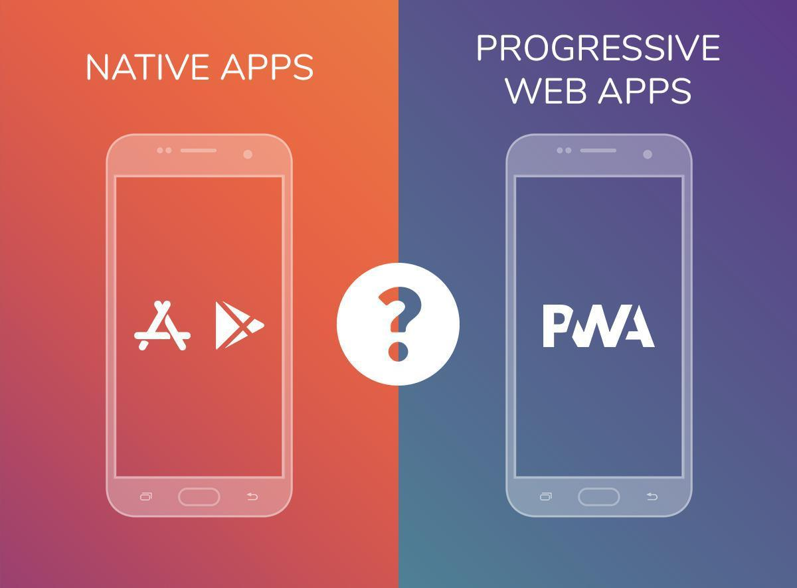

PWA
Autor:Brenda kelly Garcia

Definicion:
Una aplicación web progresiva es un tipo de software de aplicación que se entrega a través de la web, creado utilizando tecnologías web comunes como HTML, CSS y JavaScript. Está destinado a funcionar en cualquier plataforma que use un navegador compatible con los estándares